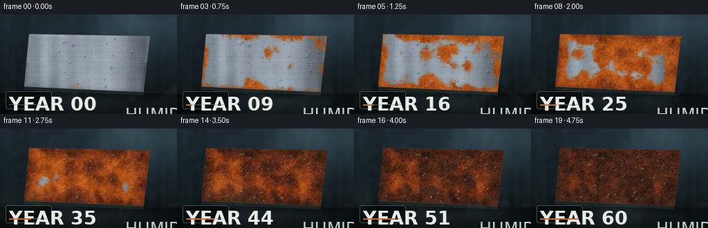
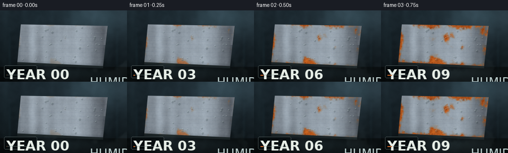
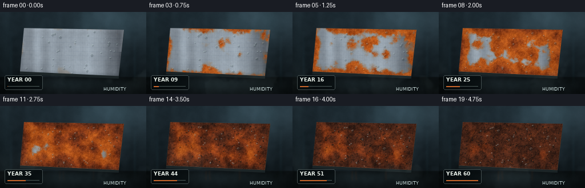
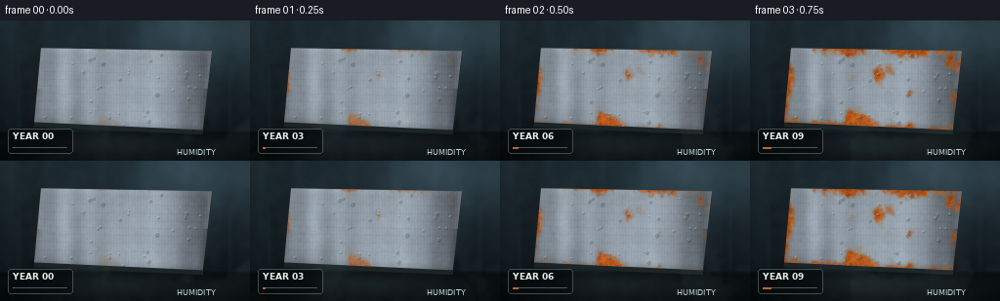

CODING AGENTS AS PIXEL WORLD MODELS
traex/GPT-5.6-Sol · phygen_157
点击播放 · 原生 RGB 像素
逐轮保存的候选
回放视频、检查图与代码变化。
每份候选均可单独播放。实际图片检查记录在下方工具轨迹中。
候选 01播放与检查图
点击播放 · 原生 RGB 像素


展开代码变化
--- 上一保存版本
+++ 本次保存版本
@@ -0,0 +1,299 @@
+from pathlib import Path
+import json
+import numpy as np
+import cv2
+from PIL import Image, ImageDraw, ImageFont
+from scipy.ndimage import distance_transform_edt, gaussian_filter
+import artifact_io
+
+# Deterministic, entirely procedural rendering of accelerated steel corrosion.
+ROOT = Path(__file__).resolve().parent
+SPEC = json.loads((ROOT / "task_spec.json").read_text())
+W, H, N = SPEC["width"], SPEC["height"], SPEC["frames"]
+S = 3
+w, h = W*S, H*S
+rng = np.random.default_rng(1572026)
+yy, xx = np.mgrid[0:h, 0:w]
+
+
+def smoothstep(a, b, x):
+ q = np.clip((x-a)/(b-a), 0.0, 1.0)
+ return q*q*(3-2*q)
+
+
+def fractal_noise(shape, sigmas, weights, seed):
+ rr = np.random.default_rng(seed)
+ z = np.zeros(shape, np.float32)
+ norm = 0.0
+ for sig, wt in zip(sigmas, weights):
+ n = rr.normal(0, 1, shape).astype(np.float32)
+ n = gaussian_filter(n, sig, mode="reflect")
+ n = (n - n.mean()) / (n.std() + 1e-6)
+ z += wt*n
+ norm += wt
+ return z / norm
+
+# Stable world masks: a thick rectangular steel test coupon viewed in slight perspective.
+poly = np.array([[126, 85], [650, 94], [622, 336], [105, 312]], np.int32)
+face_u8 = np.zeros((h, w), np.uint8)
+cv2.fillConvexPoly(face_u8, poly, 255, lineType=cv2.LINE_AA)
+face = face_u8.astype(np.float32)/255.0
+hard_face = face > .55
+inside_d = distance_transform_edt(hard_face).astype(np.float32)
+outside_d = distance_transform_edt(~hard_face).astype(np.float32)
+
+# Face-space normalized coordinates, useful for coherent directional brushing.
+U = (xx - (115 + (yy-85)*(-21/227))) / 535.0
+V = (yy - (85 + 9*np.clip(U,0,1))) / 242.0
+
+# Material texture: brushed steel at several spatial scales.
+metal_noise = fractal_noise((h,w), [0.7, 3.0, 15.0, 48.0], [.17,.18,.24,.41], 801)
+brush_1d = gaussian_filter(rng.normal(size=w).astype(np.float32), 17)
+brush_1d = (brush_1d-brush_1d.mean())/(brush_1d.std()+1e-6)
+brush = np.tile(brush_1d, (h,1))
+fine_brush = np.sin(xx*.68 + 0.5*np.sin(yy*.07)) + .45*np.sin(xx*1.81)
+
+# Corrosion arrival-time map. Dozens of independent electrochemical sites spread,
+# edges attack earlier, and a few moisture paths bias growth vertically.
+time_field = np.full((h,w), 9.0, np.float32)
+seed_sites = []
+for k in range(53):
+ # Rejection sample inside coupon, with some seeds near vulnerable edges.
+ if k < 15:
+ edge_points = np.argwhere(hard_face & (inside_d < 16))
+ sy, sx = edge_points[rng.integers(len(edge_points))]
+ else:
+ while True:
+ sx = int(rng.uniform(125, 640)); sy = int(rng.uniform(92, 325))
+ if hard_face[sy, sx]: break
+ onset = float(rng.uniform(.055, .55) if k >= 5 else rng.uniform(.03,.22))
+ radius = float(rng.uniform(70, 155))
+ anis = float(rng.uniform(.68, 1.28))
+ d = np.sqrt(((xx-sx)/(radius*anis))**2 + ((yy-sy)/radius)**2)
+ # irregular perimeter comes later via time noise
+ time_field = np.minimum(time_field, onset + d*.68)
+ seed_sites.append((sx,sy,onset,radius))
+# Edge crevice corrosion and lower-edge retained water.
+edge_arrival = .10 + inside_d/175.0 + .035*np.sin(xx*.051)
+lower_edge = .21 + np.abs(inside_d)/130.0 + np.clip((305-yy)/340,0,.18)
+time_field = np.minimum(time_field, edge_arrival)
+time_field = np.minimum(time_field, lower_edge)
+arrival_noise = fractal_noise((h,w), [1.4, 5, 18, 58], [.10,.20,.31,.39], 932)
+time_field += .105*arrival_noise + .025*np.sin(xx*.028 + yy*.043)
+time_field = np.clip(time_field, .02, 1.15)
+
+# Pits and crack network become visible only after oxidation has matured.
+pit_noise = fractal_noise((h,w), [.8, 2.2, 6], [.45,.35,.2], 731)
+pit_centers = np.zeros((h,w), np.float32)
+for _ in range(150):
+ while True:
+ px, py = int(rng.uniform(112,642)), int(rng.uniform(88,330))
+ if hard_face[py,px]: break
+ rad = int(rng.uniform(1.5, 5.0))
+ cv2.circle(pit_centers, (px,py), rad, float(rng.uniform(.45,1)), -1, cv2.LINE_AA)
+pit_centers = gaussian_filter(pit_centers, .7)
+cracks = np.zeros((h,w), np.float32)
+for _ in range(42):
+ while True:
+ x0,y0 = int(rng.uniform(130,620)), int(rng.uniform(100,315))
+ if hard_face[y0,x0]: break
+ pts=[(x0,y0)]
+ angle=rng.uniform(0,2*np.pi)
+ for j in range(rng.integers(2,5)):
+ angle += rng.normal(0,.65)
+ length=rng.uniform(8,25)
+ pts.append((int(pts[-1][0]+np.cos(angle)*length), int(pts[-1][1]+np.sin(angle)*length)))
+ cv2.polylines(cracks,[np.array(pts,np.int32)],False,float(rng.uniform(.35,.8)),int(rng.integers(1,3)),cv2.LINE_AA)
+cracks = gaussian_filter(cracks,.45)*hard_face
+
+# Condensation drops: fixed nucleation sites, moving down slowly over the timelapse.
+drops=[]
+for _ in range(34):
+ while True:
+ dx,dy=int(rng.uniform(135,625)),int(rng.uniform(100,302))
+ if hard_face[dy,dx]: break
+ drops.append((dx,dy,float(rng.uniform(3.2,8.2)),float(rng.uniform(0,1)),float(rng.uniform(5,30))))
+
+# Decorative rust flakes used late in the sequence.
+flakes=[]
+for _ in range(90):
+ while True:
+ fx,fy=int(rng.uniform(118,635)),int(rng.uniform(90,325))
+ if hard_face[fy,fx]: break
+ flakes.append((fx,fy,int(rng.uniform(2,8)),int(rng.uniform(1,4)),float(rng.uniform(.54,.94)),float(rng.uniform(0,180))))
+
+try:
+ font = ImageFont.truetype("/usr/share/fonts/truetype/dejavu/DejaVuSans.ttf", 8*S)
+ font_b = ImageFont.truetype("/usr/share/fonts/truetype/dejavu/DejaVuSans-Bold.ttf", 9*S)
+except Exception:
+ font = font_b = ImageFont.load_default()
+
+
+def composite(img, color, alpha):
+ return img*(1-alpha[...,None]) + np.asarray(color,np.float32)[None,None,:]*alpha[...,None]
+
+
+def render(i):
+ p = i/(N-1)
+ # Wet workshop background: blue-gray concrete wall and a glossy dark bench.
+ bg_noise = fractal_noise((h,w), [2,10,42,110], [.06,.15,.34,.45], 321)
+ wall_grad = np.clip(1 - yy/h,0,1)
+ img = np.zeros((h,w,3),np.float32)
+ img[:,:,0] = 17 + 15*wall_grad + 6*bg_noise
+ img[:,:,1] = 24 + 22*wall_grad + 7*bg_noise
+ img[:,:,2] = 28 + 26*wall_grad + 8*bg_noise
+ # Vertical damp streaks and vague reflected window light.
+ streak = gaussian_filter(np.random.default_rng(99).normal(size=w),18)
+ streak=(streak-streak.min())/(streak.max()-streak.min()+1e-6)
+ img += (streak[None,:,None]**3)*np.array([7,10,11])[None,None,:]
+ window = np.exp(-((xx-610)/175)**2 - ((yy-35)/115)**2)[...,None]
+ img += window*np.array([24,33,36])[None,None,:]
+ horizon=342
+ table_mask = smoothstep(horizon-5,horizon+5,yy)
+ table_col=np.stack([12+5*bg_noise,17+6*bg_noise,19+7*bg_noise],axis=-1)
+ img=img*(1-table_mask[...,None])+table_col*table_mask[...,None]
+ # Wet puddles/reflections on the workbench.
+ puddle = np.exp(-((xx-390)/330)**2 - ((yy-380)/38)**2)
+ img += (puddle*table_mask)[...,None]*np.array([9,13,14])
+ for xst in [58, 707]:
+ wetline=np.exp(-((xx-xst)/8)**2)*smoothstep(25,300,yy)*(1-smoothstep(320,400,yy))
+ img += wetline[...,None]*np.array([3,6,7])
+
+ # Cast shadow and visible lower/right thickness establish a solid piece of steel.
+ shadow = np.exp(-outside_d/13.0)*(outside_d>0)*smoothstep(280,350,yy)
+ img = composite(img,(2,5,6),.58*shadow)
+ thickness=np.zeros((h,w),np.uint8)
+ sidepoly=np.array([[105,312],[622,336],[622,350],[104,327]],np.int32)
+ rightpoly=np.array([[650,94],[622,336],[622,350],[650,108]],np.int32)
+ cv2.fillConvexPoly(thickness,sidepoly,255,cv2.LINE_AA); cv2.fillConvexPoly(thickness,rightpoly,255,cv2.LINE_AA)
+ th=thickness.astype(np.float32)/255
+ img=composite(img,(30,39,41),th)
+ # Orange runoff stain beneath the coupon at advanced ages.
+ runoff_under = np.zeros((h,w),np.float32)
+ if p>.35:
+ for sx,sy,onset,rad in seed_sites[:11]:
+ if sy>250 and p>onset+.15:
+ cv2.line(runoff_under,(sx,318),(sx+int(8*np.sin(sx)),min(h-1,390)),.22,3,cv2.LINE_AA)
+ runoff_under=gaussian_filter(runoff_under,4)*table_mask*smoothstep(.35,.8,p)
+ img=composite(img,(92,43,18),runoff_under)
+
+ # Clean brushed base: broad cool specular band, fine horizontal directional grain.
+ bevel = np.clip((19-inside_d)/19,0,1)*hard_face
+ broad_spec=np.exp(-((xx-(315+0.20*yy))/150)**2)
+ base_lum=139 + 30*broad_spec + 13*brush + 3.0*fine_brush + 8*metal_noise
+ base=np.stack([base_lum*.91, base_lum*.98, base_lum*1.02+4],axis=-1)
+ # subtle upper edge light and dark bevel on lower rim
+ base += bevel[...,None]*(np.where((yy<210)[...,None],12,-18))
+ # tiny original machining scratches remain beneath rust
+ for k in range(7):
+ sy=128+k*24+int(3*np.sin(k))
+ scratch=np.exp(-((yy-(sy+.018*xx))/1.0)**2)*hard_face
+ base -= scratch[...,None]*np.array([9,8,6])
+ img=img*(1-face[...,None])+base*face[...,None]
+
+ # Corrosion grows continuously from the fixed arrival map.
+ delta=p-time_field
+ rust=smoothstep(-.025,.08,delta)*face
+ mature=smoothstep(.09,.42,delta)*rust
+ old=smoothstep(.28,.66,delta)*rust
+ fringe=(smoothstep(-.085,.015,delta)-smoothstep(.025,.13,delta))*face
+ # Initial hydrated oxide / tarnish halo.
+ img=composite(img,(151,105,54),.28*np.clip(fringe,0,1))
+ # Highly textured rust palette, changing from vivid orange to red-brown to black scale.
+ tex=fractal_noise((h,w), [.65,2.5,8,25], [.24,.26,.28,.22], 440)
+ young_col=np.stack([178+24*tex,83+18*tex,25+8*tex],axis=-1)
+ mid_col=np.stack([127+30*tex,53+15*tex,23+7*tex],axis=-1)
+ old_col=np.stack([69+24*tex,36+11*tex,24+6*tex],axis=-1)
+ rcol=young_col*(1-mature[...,None])+mid_col*mature[...,None]
+ rcol=rcol*(1-old[...,None])+old_col*old[...,None]
+ # A bump-like light response makes oxide granular and crusty.
+ height=rust*(.35+.65*np.clip((tex+1)/2,0,1))
+ gy,gx=np.gradient(height)
+ bump=np.clip(-1.7*gx-1.2*gy,-.25,.28)
+ rcol += bump[...,None]*np.array([75,48,27])
+ img=img*(1-rust[...,None])+rcol*rust[...,None]
+
+ # Rust-laden water travels downward from several established patches.
+ streak_layer=np.zeros((h,w),np.float32)
+ for sx,sy,onset,rad in seed_sites[5:28]:
+ amount=smoothstep(onset+.12,onset+.52,p)
+ if amount>0:
+ length=int((15+65*amount)*(0.5+((sx*17)%31)/31))
+ xend=sx+int(5*np.sin((sx+sy)*.07))
+ cv2.line(streak_layer,(sx,sy),(xend,min(h-1,sy+length)),float(.22*amount),int(2+sx%5),cv2.LINE_AA)
+ streak_layer=gaussian_filter(streak_layer,2.2)*face
+ img=composite(img,(113,48,17),streak_layer)
+
+ # Deep pits, undercut scale cracks, and lifted flakes arrive in later decades.
+ pit_alpha=(smoothstep(.34,.82,p)*rust*mature*np.clip(pit_centers + .20*np.maximum(pit_noise-1.05,0),0,1))
+ img=composite(img,(26,22,19),np.clip(pit_alpha*.92,0,.85))
+ crack_alpha=np.clip(cracks*old*smoothstep(.58,.88,p),0,.7)
+ img=composite(img,(28,18,14),crack_alpha)
+
+ # Flakes have a tiny dark shadow and ochre upper highlight.
+ overlay=img.copy()
+ for fx,fy,rx,ry,onset,ang in flakes:
+ a=smoothstep(onset,onset+.07,p)
+ if a<=0 or rust[fy,fx]<.5: continue
+ mask=np.zeros((h,w),np.uint8)
+ cv2.ellipse(mask,(fx+1,fy+2),(rx,ry),ang,0,360,255,-1,cv2.LINE_AA)
+ ma=(mask/255.0)*a*.58*face
+ overlay=composite(overlay,(42,22,15),ma)
+ mask2=np.zeros((h,w),np.uint8)
+ cv2.ellipse(mask2,(fx-1,fy-1),(max(1,rx-1),max(1,ry-1)),ang,190,355,255,1,cv2.LINE_AA)
+ mh=(mask2/255.0)*a*.72*face
+ overlay=composite(overlay,(207,104,37),mh)
+ img=overlay
+
+ # Condensation: dark lens body, sharp upper-left glint, and moving gravity tails.
+ # Drops change phase so humidity remains visibly active even as decades pass.
+ for j,(dx,dy,rad,phase,speed) in enumerate(drops):
+ life=(p+phase)%1.0
+ cy=int(dy + speed*life)
+ cx=int(dx + 2*np.sin(phase*9+p*8))
+ rr=max(2,int(rad*(.63+.37*np.sin(np.pi*life))))
+ if cy>=h or not hard_face[min(cy,h-1),min(max(cx,0),w-1)]: continue
+ dm=np.zeros((h,w),np.uint8)
+ cv2.ellipse(dm,(cx+1,cy+1),(rr,max(2,int(rr*1.2))),0,0,360,190,-1,cv2.LINE_AA)
+ da=dm.astype(np.float32)/255*.25*face
+ img=composite(img,(20,34,37),da)
+ # refractive bright rim and specular bead
+ rim=np.zeros((h,w),np.uint8)
+ cv2.ellipse(rim,(cx,cy),(rr,max(2,int(rr*1.2))),0,190,325,210,max(1,S//2),cv2.LINE_AA)
+ cv2.circle(rim,(cx-max(1,rr//3),cy-max(1,rr//3)),max(1,rr//5),255,-1,cv2.LINE_AA)
+ ra=rim.astype(np.float32)/255*.62*face
+ img=composite(img,(221,239,236),ra)
+ if rr>4 and life>.45:
+ tail=np.zeros((h,w),np.uint8)
+ cv2.line(tail,(cx,cy+rr),(cx,cy+rr+int(8*life)),85,max(1,rr//3),cv2.LINE_AA)
+ ta=gaussian_filter(tail.astype(np.float32)/255,1)*face
+ img=composite(img,(38,57,57),ta*.3)
+
+ # Foreground vapor rolls gently through; faint enough not to hide the specimen.
+ fog_noise=fractal_noise((h,w), [8,28,75], [.12,.34,.54], 200+i)
+ fog=(smoothstep(.36,.92,fog_noise)*np.exp(-((yy-(345+20*np.sin(p*6)))/90)**2))
+ img=composite(img,(124,145,145),fog*.07)
+
+ # Slight optical vignette and cool humid ambience.
+ vign=np.clip(((xx-w/2)/(w*.68))**2+((yy-h/2)/(h*.80))**2,0,1)
+ img *= (1-.24*vign[...,None])
+ img=np.clip(img,0,255).astype(np.uint8)
+ # Supersampled antialiasing.
+ small=cv2.resize(img,(W,H),interpolation=cv2.INTER_AREA)
+
+ # Stable documentary timeline overlay, making the decades explicit.
+ pil=Image.fromarray(cv2.cvtColor(small,cv2.COLOR_BGR2RGB) if False else small)
+ dr=ImageDraw.Draw(pil,"RGBA")
+ years=int(round(p*60))
+ dr.rounded_rectangle((8,111,74,136),radius=3,fill=(5,11,13,150),outline=(191,211,207,80),width=1)
+ dr.text((13,113),f"YEAR {years:02d}",font=font_b,fill=(231,238,231,235))
+ dr.line((13,130,68,130),fill=(137,157,151,130),width=1)
+ dr.line((13,130,13+int(55*p),130),fill=(210,104,42,235),width=2)
+ # Small title remains discreet and reinforces accelerated observation.
+ dr.text((181,130),"HUMIDITY",font=font,fill=(193,211,210,125))
+ return np.asarray(pil,dtype=np.uint8)
+
+frames=np.stack([render(i) for i in range(N)],axis=0)
+assert frames.shape==(N,H,W,3) and frames.dtype==np.uint8
+artifact_io.save(frames,ROOT)
+print(f"saved {N} RGB frames: {frames.shape}, mean={frames.mean():.2f}")
候选 02播放与检查图
点击播放 · 原生 RGB 像素


展开代码变化
--- 上一保存版本
+++ 本次保存版本
@@ -123,8 +123,8 @@
flakes.append((fx,fy,int(rng.uniform(2,8)),int(rng.uniform(1,4)),float(rng.uniform(.54,.94)),float(rng.uniform(0,180))))
try:
- font = ImageFont.truetype("/usr/share/fonts/truetype/dejavu/DejaVuSans.ttf", 8*S)
- font_b = ImageFont.truetype("/usr/share/fonts/truetype/dejavu/DejaVuSans-Bold.ttf", 9*S)
+ font = ImageFont.truetype("/usr/share/fonts/truetype/dejavu/DejaVuSans.ttf", 8)
+ font_b = ImageFont.truetype("/usr/share/fonts/truetype/dejavu/DejaVuSans-Bold.ttf", 9)
except Exception:
font = font_b = ImageFont.load_default()
可观测工具轨迹
实际执行的命令与返回图片。
命令 1exit 0
/bin/bash -lc "ls -la && printf '\\n--- prompt.txt ---\\n' && cat prompt.txt"
命令 2exit 0
/bin/bash -lc "printf '%s\\n' '--- GENERATION_RULES.md ---' && cat GENERATION_RULES.md && printf '%s\\n' '--- task_spec.json ---' && cat task_spec.json"
命令 3exit 0
/bin/bash -lc "sed -n '1,260p' artifact_io.py && printf '\\n--- player template excerpt ---\\n' && sed -n '1,220p' player_template.html"
命令 4exit 0
/bin/bash -lc "python - <<'PY'
try:
import scipy; print('scipy',scipy.__version__)
except Exception as e: print('no scipy',e)
try:
import cv2; print('cv2',cv2.__version__)
except Exception as e: print('no cv2',e)
PY"命令 5exit 0
/bin/bash -lc "cat > generate.py <<'PY'
from pathlib import Path
import json
import numpy as np
import cv2
from PIL import Image, ImageDraw, ImageFont
from scipy.ndimage import distance_transform_edt, gaussian_filter
import artifact_io
# Deterministic, entirely procedural rendering of accelerated steel corrosion.
ROOT = Path(__file__).resolve().parent
SPEC = json.loads((ROOT / \"task_spec.json\").read_text())
W, H, N = SPEC[\"width\"], SPEC[\"height\"], SPEC[\"frames\"]
S = 3
w, h = W*S, H*S
rng = np.random.default_rng(1572026)
yy, xx = np.mgrid[0:h, 0:w]
def smoothstep(a, b, x):
q = np.clip((x-a)/(b-a), 0.0, 1.0)
return q*q*(3-2*q)
def fractal_noise(shape, sigmas, weights, seed):
rr = np.random.default_rng(seed)
z = np.zeros(shape, np.float32)
norm = 0.0
for sig, wt in zip(sigmas, weights):
n = rr.normal(0, 1, shape).astype(np.float32)
n = gaussian_filter(n, sig, mode=\"reflect\")
n = (n - n.mean()) / (n.std() + 1e-6)
z += wt*n
norm += wt
return z / norm
# Stable world masks: a thick rectangular steel test coupon viewed in slight perspective.
poly = np.array([[126, 85], [650, 94], [622, 336], [105, 312]], np.int32)
face_u8 = np.zeros((h, w), np.uint8)
cv2.fillConvexPoly(face_u8, poly, 255, lineType=cv2.LINE_AA)
face = face_u8.astype(np.float32)/255.0
hard_face = face > .55
inside_d = distance_transform_edt(hard_face).astype(np.float32)
outside_d = distance_transform_edt(~hard_face).astype(np.float32)
# Face-space normalized coordinates, useful for coherent directional brushing.
U = (xx - (115 + (yy-85)*(-21/227))) / 535.0
V = (yy - (85 + 9*np.clip(U,0,1))) / 242.0
# Material texture: brushed steel at several spatial scales.
metal_noise = fractal_noise((h,w), [0.7, 3.0, 15.0, 48.0], [.17,.18,.24,.41], 801)
brush_1d = gaussian_filter(rng.normal(size=w).astype(np.float32), 17)
brush_1d = (brush_1d-brush_1d.mean())/(brush_1d.std()+1e-6)
brush = np.tile(brush_1d, (h,1))
fine_brush = np.sin(xx*.68 + 0.5*np.sin(yy*.07)) + .45*np.sin(xx*1.81)
# Corrosion arrival-time map. Dozens of independent electrochemical sites spread,
# edges attack earlier, and a few moisture paths bias growth vertically.
time_field = np.full((h,w), 9.0, np.float32)
seed_sites = []
for k in range(53):
# Rejection sample inside coupon, with some seeds near vulnerable edges.
if k < 15:
edge_points = np.argwhere(hard_face & (inside_d < 16))
sy, sx = edge_points[rng.integers(len(edge_points))]
else:
while True:
sx = int(rng.uniform(125, 640)); sy = int(rng.uniform(92, 325))
if hard_face[sy, sx]: break
onset = float(rng.uniform(.055, .55) if k >= 5 else rng.uniform(.03,.22))
radius = float(rng.uniform(70, 155))
anis = float(rng.uniform(.68, 1.28))
d = np.sqrt(((xx-sx)/(radius*anis))**2 + ((yy-sy)/radius)**2)
# irregular perimeter comes later via time noise
time_field = np.minimum(time_field, onset + d*.68)
seed_sites.append((sx,sy,onset,radius))
# Edge crevice corrosion and lower-edge retained water.
edge_arrival = .10 + inside_d/175.0 + .035*np.sin(xx*.051)
lower_edge = .21 + np.abs(inside_d)/130.0 + np.clip((305-yy)/340,0,.18)
time_field = np.minimum(time_field, edge_arrival)
time_field = np.minimum(time_field, lower_edge)
arrival_noise = fractal_noise((h,w), [1.4, 5, 18, 58], [.10,.20,.31,.39], 932)
time_field += .105*arrival_noise + .025*np.sin(xx*.028 + yy*.043)
time_field = np.clip(time_field, .02, 1.15)
# Pits and crack network become visible only after oxidation has matured.
pit_noise = fractal_noise((h,w), [.8, 2.2, 6], [.45,.35,.2], 731)
pit_centers = np.zeros((h,w), np.float32)
for _ in range(150):
while True:
px, py = int(rng.uniform(112,642)), int(rng.uniform(88,330))
if hard_face[py,px]: break
rad = int(rng.uniform(1.5, 5.0))
cv2.circle(pit_centers, (px,py), rad, float(rng.uniform(.45,1)), -1, cv2.LINE_AA)
pit_centers = gaussian_filter(pit_centers, .7)
cracks = np.zeros((h,w), np.float32)
for _ in range(42):
while True:
x0,y0 = int(rng.uniform(130,620)), int(rng.uniform(100,315))
if hard_face[y0,x0]: break
pts=[(x0,y0)]
angle=rng.uniform(0,2*np.pi)
for j in range(rng.integers(2,5)):
angle += rng.normal(0,.65)
length=rng.uniform(8,25)
pts.append((int(pts[-1][0]+np.cos(angle)*length), int(pts[-1][1]+np.sin(angle)*length)))
cv2.polylines(cracks,[np.array(pts,np.int32)],False,float(rng.uniform(.35,.8)),int(rng.integers(1,3)),cv2.LINE_AA)
cracks = gaussian_filter(cracks,.45)*hard_face
# Condensation drops: fixed nucleation sites, moving down slowly over the timelapse.
drops=[]
for _ in range(34):
while True:
dx,dy=int(rng.uniform(135,625)),int(rng.uniform(100,302))
if hard_face[dy,dx]: break
drops.append((dx,dy,float(rng.uniform(3.2,8.2)),float(rng.uniform(0,1)),float(rng.uniform(5,30))))
# Decorative rust flakes used late in the sequence.
flakes=[]
for _ in range(90):
while True:
fx,fy=int(rng.uniform(118,635)),int(rng.uniform(90,325))
if hard_face[fy,fx]: break
flakes.append((fx,fy,int(rng.uniform(2,8)),int(rng.uniform(1,4)),float(rng.uniform(.54,.94)),float(rng.uniform(0,180))))
try:
font = ImageFont.truetype(\"/usr/share/fonts/truetype/dejavu/DejaVuSans.ttf\", 8*S)
font_b = ImageFont.truetype(\"/usr/share/fonts/truetype/dejavu/DejaVuSans-Bold.ttf\", 9*S)
except Exception:
font = font_b = ImageFont.load_default()
def composite(img, color, alpha):
return img*(1-alpha[...,None]) + np.asarray(color,np.float32)[None,None,:]*alpha[...,None]
def render(i):
p = i/(N-1)
# Wet workshop background: blue-gray concrete wall and a glossy dark bench.
bg_noise = fractal_noise((h,w), [2,10,42,110], [.06,.15,.34,.45], 321)
wall_grad = np.clip(1 - yy/h,0,1)
img = np.zeros((h,w,3),np.float32)
img[:,:,0] = 17 + 15*wall_grad + 6*bg_noise
img[:,:,1] = 24 + 22*wall_grad + 7*bg_noise
img[:,:,2] = 28 + 26*wall_grad + 8*bg_noise
# Vertical damp streaks and vague reflected window light.
streak = gaussian_filter(np.random.default_rng(99).normal(size=w),18)
streak=(streak-streak.min())/(streak.max()-streak.min()+1e-6)
img += (streak[None,:,None]**3)*np.array([7,10,11])[None,None,:]
window = np.exp(-((xx-610)/175)**2 - ((yy-35)/115)**2)[...,None]
img += window*np.array([24,33,36])[None,None,:]
horizon=342
table_mask = smoothstep(horizon-5,horizon+5,yy)
table_col=np.stack([12+5*bg_noise,17+6*bg_noise,19+7*bg_noise],axis=-1)
img=img*(1-table_mask[...,None])+table_col*table_mask[...,None]
# Wet puddles/reflections on the workbench.
puddle = np.exp(-((xx-390)/330)**2 - ((yy-380)/38)**2)
img += (puddle*table_mask)[...,None]*np.array([9,13,14])
for xst in [58, 707]:
wetline=np.exp(-((xx-xst)/8)**2)*smoothstep(25,300,yy)*(1-smoothstep(320,400,yy))
img += wetline[...,None]*np.array([3,6,7])
# Cast shadow and visible lower/right thickness establish a solid piece of steel.
shadow = np.exp(-outside_d/13.0)*(outside_d>0)*smoothstep(280,350,yy)
img = composite(img,(2,5,6),.58*shadow)
thickness=np.zeros((h,w),np.uint8)
sidepoly=np.array([[105,312],[622,336],[622,350],[104,327]],np.int32)
rightpoly=np.array([[650,94],[622,336],[622,350],[650,108]],np.int32)
cv2.fillConvexPoly(thickness,sidepoly,255,cv2.LINE_AA); cv2.fillConvexPoly(thickness,rightpoly,255,cv2.LINE_AA)
th=thickness.astype(np.float32)/255
img=composite(img,(30,39,41),th)
# Orange runoff stain beneath the coupon at advanced ages.
runoff_under = np.zeros((h,w),np.float32)
if p>.35:
for sx,sy,onset,rad in seed_sites[:11]:
if sy>250 and p>onset+.15:
cv2.line(runoff_under,(sx,318),(sx+int(8*np.sin(sx)),min(h-1,390)),.22,3,cv2.LINE_AA)
runoff_under=gaussian_filter(runoff_under,4)*table_mask*smoothstep(.35,.8,p)
img=composite(img,(92,43,18),runoff_under)
# Clean brushed base: broad cool specular band, fine horizontal directional grain.
bevel = np.clip((19-inside_d)/19,0,1)*hard_face
broad_spec=np.exp(-((xx-(315+0.20*yy))/150)**2)
base_lum=139 + 30*broad_spec + 13*brush + 3.0*fine_brush + 8*metal_noise
base=np.stack([base_lum*.91, base_lum*.98, base_lum*1.02+4],axis=-1)
# subtle upper edge light and dark bevel on lower rim
base += bevel[...,None]*(np.where((yy<210)[...,None],12,-18))
# tiny original machining scratches remain beneath rust
for k in range(7):
sy=128+k*24+int(3*np.sin(k))
scratch=np.exp(-((yy-(sy+.018*xx))/1.0)**2)*hard_face
base -= scratch[...,None]*np.array([9,8,6])
img=img*(1-face[...,None])+base*face[...,None]
# Corrosion grows continuously from the fixed arrival map.
delta=p-time_field
rust=smoothstep(-.025,.08,delta)*face
mature=smoothstep(.09,.42,delta)*rust
old=smoothstep(.28,.66,delta)*rust
fringe=(smoothstep(-.085,.015,delta)-smoothstep(.025,.13,delta))*face
# Initial hydrated oxide / tarnish halo.
img=composite(img,(151,105,54),.28*np.clip(fringe,0,1))
# Highly textured rust palette, changing from vivid orange to red-brown to black scale.
tex=fractal_noise((h,w), [.65,2.5,8,25], [.24,.26,.28,.22], 440)
young_col=np.stack([178+24*tex,83+18*tex,25+8*tex],axis=-1)
mid_col=np.stack([127+30*tex,53+15*tex,23+7*tex],axis=-1)
old_col=np.stack([69+24*tex,36+11*tex,24+6*tex],axis=-1)
rcol=young_col*(1-mature[...,None])+mid_col*mature[...,None]
rcol=rcol*(1-old[...,None])+old_col*old[...,None]
# A bump-like light response makes oxide granular and crusty.
height=rust*(.35+.65*np.clip((tex+1)/2,0,1))
gy,gx=np.gradient(height)
bump=np.clip(-1.7*gx-1.2*gy,-.25,.28)
rcol += bump[...,None]*np.array([75,48,27])
img=img*(1-rust[...,None])+rcol*rust[...,None]
# Rust-laden water travels downward from several established patches.
streak_layer=np.zeros((h,w),np.float32)
for sx,sy,onset,rad in seed_sites[5:28]:
amount=smoothstep(onset+.12,onset+.52,p)
if amount>0:
length=int((15+65*amount)*(0.5+((sx*17)%31)/31))
xend=sx+int(5*np.sin((sx+sy)*.07))
cv2.line(streak_layer,(sx,sy),(xend,min(h-1,sy+length)),float(.22*amount),int(2+sx%5),cv2.LINE_AA)
streak_layer=gaussian_filter(streak_layer,2.2)*face
img=composite(img,(113,48,17),streak_layer)
# Deep pits, undercut scale cracks, and lifted flakes arrive in later decades.
pit_alpha=(smoothstep(.34,.82,p)*rust*mature*np.clip(pit_centers + .20*np.maximum(pit_noise-1.05,0),0,1))
img=composite(img,(26,22,19),np.clip(pit_alpha*.92,0,.85))
crack_alpha=np.clip(cracks*old*smoothstep(.58,.88,p),0,.7)
img=composite(img,(28,18,14),crack_alpha)
# Flakes have a tiny dark shadow and ochre upper highlight.
overlay=img.copy()
for fx,fy,rx,ry,onset,ang in flakes:
a=smoothstep(onset,onset+.07,p)
if a<=0 or rust[fy,fx]<.5: continue
mask=np.zeros((h,w),np.uint8)
cv2.ellipse(mask,(fx+1,fy+2),(rx,ry),ang,0,360,255,-1,cv2.LINE_AA)
ma=(mask/255.0)*a*.58*face
overlay=composite(overlay,(42,22,15),ma)
mask2=np.zeros((h,w),np.uint8)
cv2.ellipse(mask2,(fx-1,fy-1),(max(1,rx-1),max(1,ry-1)),ang,190,355,255,1,cv2.LINE_AA)
mh=(mask2/255.0)*a*.72*face
overlay=composite(overlay,(207,104,37),mh)
img=overlay
# Condensation: dark lens body, sharp upper-left glint, and moving gravity tails.
# Drops change phase so humidity remains visibly active even as decades pass.
for j,(dx,dy,rad,phase,speed) in enumerate(drops):
life=(p+phase)%1.0
cy=int(dy + speed*life)
cx=int(dx + 2*np.sin(phase*9+p*8))
rr=max(2,int(rad*(.63+.37*np.sin(np.pi*life))))
if cy>=h or not hard_face[min(cy,h-1),min(max(cx,0),w-1)]: continue
dm=np.zeros((h,w),np.uint8)
cv2.ellipse(dm,(cx+1,cy+1),(rr,max(2,int(rr*1.2))),0,0,360,190,-1,cv2.LINE_AA)
da=dm.astype(np.float32)/255*.25*face
img=composite(img,(20,34,37),da)
# refractive bright rim and specular bead
rim=np.zeros((h,w),np.uint8)
cv2.ellipse(rim,(cx,cy),(rr,max(2,int(rr*1.2))),0,190,325,210,max(1,S//2),cv2.LINE_AA)
cv2.circle(rim,(cx-max(1,rr//3),cy-max(1,rr//3)),max(1,rr//5),255,-1,cv2.LINE_AA)
ra=rim.astype(np.float32)/255*.62*face
img=composite(img,(221,239,236),ra)
if rr>4 and life>.45:
tail=np.zeros((h,w),np.uint8)
cv2.line(tail,(cx,cy+rr),(cx,cy+rr+int(8*life)),85,max(1,rr//3),cv2.LINE_AA)
ta=gaussian_filter(tail.astype(np.float32)/255,1)*face
img=composite(img,(38,57,57),ta*.3)
# Foreground vapor rolls gently through; faint enough not to hide the specimen.
fog_noise=fractal_noise((h,w), [8,28,75], [.12,.34,.54], 200+i)
fog=(smoothstep(.36,.92,fog_noise)*np.exp(-((yy-(345+20*np.sin(p*6)))/90)**2))
img=composite(img,(124,145,145),fog*.07)
# Slight optical vignette and cool humid ambience.
vign=np.clip(((xx-w/2)/(w*.68))**2+((yy-h/2)/(h*.80))**2,0,1)
img *= (1-.24*vign[...,None])
img=np.clip(img,0,255).astype(np.uint8)
# Supersampled antialiasing.
small=cv2.resize(img,(W,H),interpolation=cv2.INTER_AREA)
# Stable documentary timeline overlay, making the decades explicit.
pil=Image.fromarray(cv2.cvtColor(small,cv2.COLOR_BGR2RGB) if False else small)
dr=ImageDraw.Draw(pil,\"RGBA\")
years=int(round(p*60))
dr.rounded_rectangle((8,111,74,136),radius=3,fill=(5,11,13,150),outline=(191,211,207,80),width=1)
dr.text((13,113),f\"YEAR {years:02d}\",font=font_b,fill=(231,238,231,235))
dr.line((13,130,68,130),fill=(137,157,151,130),width=1)
dr.line((13,130,13+int(55*p),130),fill=(210,104,42,235),width=2)
# Small title remains discreet and reinforces accelerated observation.
dr.text((181,130),\"HUMIDITY\",font=font,fill=(193,211,210,125))
return np.asarray(pil,dtype=np.uint8)
frames=np.stack([render(i) for i in range(N)],axis=0)
assert frames.shape==(N,H,W,3) and frames.dtype==np.uint8
artifact_io.save(frames,ROOT)
print(f\"saved {N} RGB frames: {frames.shape}, mean={frames.mean():.2f}\")
PY
python generate.py"命令 6exit 0
/bin/bash -lc "python - <<'PY'
p='generate.py'
s=open(p).read()
s=s.replace('DejaVuSans.ttf\\\", 8*S)', 'DejaVuSans.ttf\\\", 8)')
s=s.replace('DejaVuSans-Bold.ttf\\\", 9*S)', 'DejaVuSans-Bold.ttf\\\", 9)')
open(p,'w').write(s)
PY
python generate.py"命令 7exit 127
/bin/bash -lc 'file frames/00.png frames/19.png inspection.png pixels.npz index.html && du -sh frames pixels.npz index.html'
命令 8exit 0
/bin/bash -lc "python - <<'PY'
from pathlib import Path
import numpy as np
from PIL import Image
p=Path('.')
a=np.load('pixels.npz')['pixels']
print('pixels',a.shape,a.dtype,'range',hex(int(a.min())),hex(int(a.max())))
files=sorted((p/'frames').glob('*.png'))
print('frame files',len(files))
arr=np.stack([np.array(Image.open(f)) for f in files])
print('rgb',arr.shape,arr.dtype,'range',arr.min(),arr.max())
print('frame means',np.round(arr.mean((1,2,3)),1).tolist())
print('adjacent MAD',np.round(np.abs(np.diff(arr.astype(float),axis=0)).mean((1,2,3)),2).tolist())
print('first-last MAD',np.abs(arr[-1].astype(float)-arr[0]).mean())
print('artifacts',[(x,Path(x).stat().st_size) for x in ['pixels.npz','inspection.png','transition_check.png','index.html']])
PY"命令 9exit 0
/bin/bash -lc 'python -m py_compile generate.py && git status --short'
命令 10exit 0
/bin/bash -lc "python - <<'PY'
import numpy as np
from PIL import Image
import cv2
S=1; H,W=144,256
poly=np.array([[42,28],[217,31],[207,112],[35,104]],np.int32)
m=np.zeros((H,W),np.uint8); cv2.fillConvexPoly(m,poly,1)
for i in [0,4,8,12,16,19]:
a=np.array(Image.open(f'frames/{i:02d}.png')).astype(float)
r,g,b=[a[:,:,j] for j in range(3)]
warm=((r>g*1.25)&(r>b*1.55)&(r>65)&(m>0)).sum()/m.sum()
silver=((np.max(a,2)-np.min(a,2)<30)&(a.mean(2)>75)&(m>0)).sum()/m.sum()
dark=((a.mean(2)<55)&(m>0)).sum()/m.sum()
print(i, 'warm rust %.1f%% silver %.1f%% dark scale %.1f%%' %(100*warm,100*silver,100*dark))
PY
ls -lh generate.py pixels.npz index.html inspection.png transition_check.png frames/00.png frames/19.png"保存候选 2 份；完成命令 10 次；可验证图片返回 0 张。原始 API 响应与完整日志保留在本地。